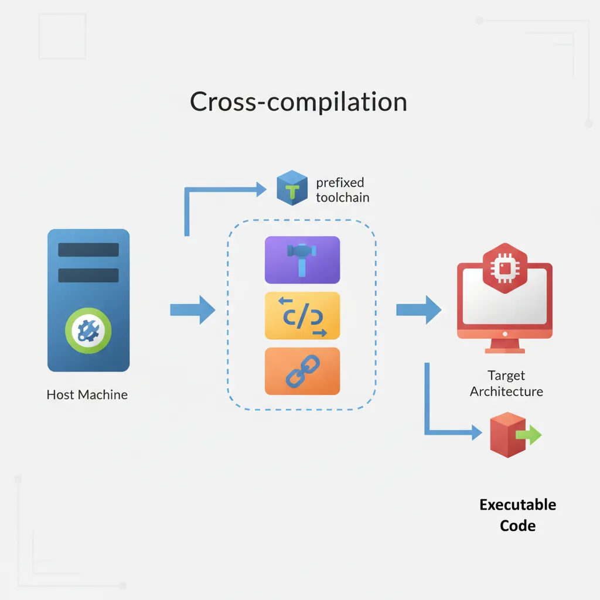
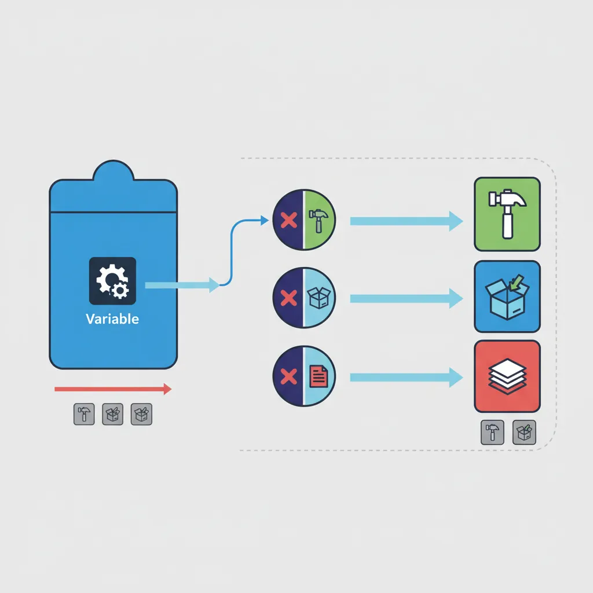
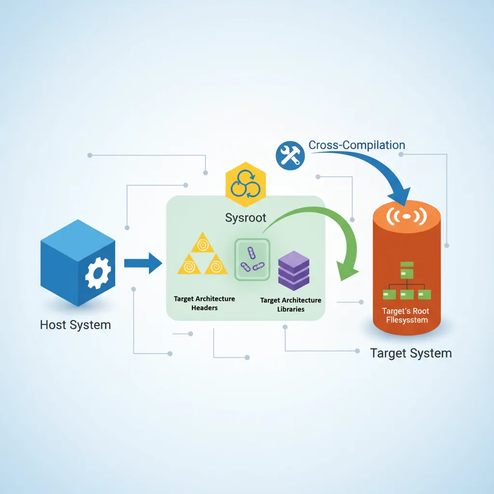
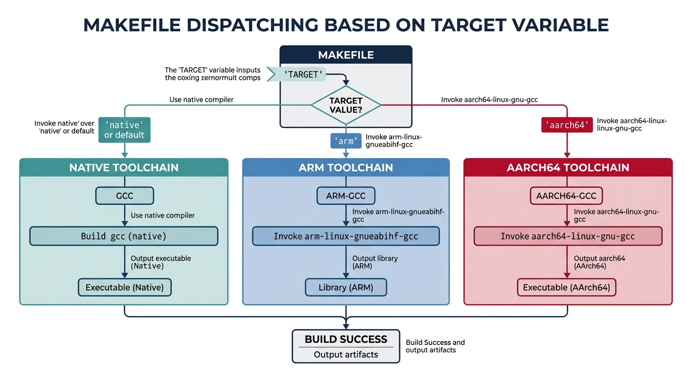

We use cookies to enhance your browsing experience, serve personalized content, and analyze our traffic. By clicking "Accept All", you consent to our use of cookies. See our Privacy Policy for more information.
GNU Make Mastery Part 10: Cross-Compilation & Toolchains
February 26, 2026Wasil Zafar20 min read
Produce firmware and embedded binaries for ARM, RISC-V, and MIPS from an x86 host: configure CROSS_COMPILE prefixes, sysroot directories, PKG_CONFIG_SYSROOT_DIR, and multi-target Makefiles that switch toolchains without code changes.
Part 10 of 16 — GNU Make Mastery Series. Cross-compilation is the norm in embedded development: your development machine (the host) is typically x86_64 Linux or macOS, while the target is an ARM Cortex-M, RISC-V SoC, or MIPS router. GNU Make bridges the gap through a handful of well-named variables.
Cross-toolchains are identified by a target triplet of the form arch-vendor-os or arch-vendor-kernel-os:

Cross-compilation workflow: host machine compiles code for a different target architecture using prefixed toolchain binaries
Common Triplets
Triplet
Target
arm-linux-gnueabihf-
ARM 32-bit, Linux, hard-float ABI (Raspberry Pi, BeagleBone)
aarch64-linux-gnu-
ARM 64-bit (AArch64), Linux
riscv64-linux-gnu-
RISC-V 64-bit, Linux
mipsel-linux-gnu-
MIPS little-endian, Linux (routers)
arm-none-eabi-
ARM bare-metal, no OS (Cortex-M MCUs)
x86_64-w64-mingw32-
Windows 64-bit, from Linux host
Toolchain Components
# Each toolchain provides prefixed versions of standard tools:
arm-linux-gnueabihf-gcc # C compiler
arm-linux-gnueabihf-g++ # C++ compiler
arm-linux-gnueabihf-as # assembler
arm-linux-gnueabihf-ld # linker
arm-linux-gnueabihf-ar # archive tool
arm-linux-gnueabihf-objcopy # binary conversion (ELF → binary/hex)
arm-linux-gnueabihf-objdump # disassembler
arm-linux-gnueabihf-size # section size reporter
arm-linux-gnueabihf-strip # symbol stripping
The CROSS_COMPILE Variable
The Linux kernel popularised the convention of a single CROSS_COMPILE variable that prefixes every tool name. This is now standard in most embedded projects:

The CROSS_COMPILE variable prefixes standard tool names (gcc, ar, objcopy) to select the correct cross-toolchain
# Set on the command line: make CROSS_COMPILE=arm-linux-gnueabihf-
CROSS_COMPILE ?= # empty = native build
CC := $(CROSS_COMPILE)gcc # C compiler
CXX := $(CROSS_COMPILE)g++ # C++ compiler
AS := $(CROSS_COMPILE)as # assembler
AR := $(CROSS_COMPILE)ar # archive tool (static libs)
LD := $(CROSS_COMPILE)ld # linker
OBJCOPY := $(CROSS_COMPILE)objcopy # binary format converter
OBJDUMP := $(CROSS_COMPILE)objdump # disassembler / section inspector
SIZE := $(CROSS_COMPILE)size # section size reporter
STRIP := $(CROSS_COMPILE)strip # symbol stripper
# Native (host) build — CROSS_COMPILE defaults to empty:
make
# Cross-build for ARM Linux:
make CROSS_COMPILE=arm-linux-gnueabihf-
# Cross-build for AArch64:
make CROSS_COMPILE=aarch64-linux-gnu-
# Cross-build for bare-metal ARM (Cortex-M):
make CROSS_COMPILE=arm-none-eabi-
Full Toolchain Variable Pattern
CROSS_COMPILE ?=
ARCH ?= $(shell uname -m) # detect host arch if not set
CC := $(CROSS_COMPILE)gcc
AR := $(CROSS_COMPILE)ar
OBJCOPY := $(CROSS_COMPILE)objcopy
SIZE := $(CROSS_COMPILE)size
# Base CFLAGS — add arch-specific below
CFLAGS := -Wall -Wextra -std=c11 -O2
# Architecture-specific flags
ifeq ($(ARCH),arm)
CFLAGS += -mcpu=cortex-a53 # target Cortex-A53 core
CFLAGS += -mfpu=neon-fp-armv8 # enable NEON SIMD unit
CFLAGS += -mfloat-abi=hard # hardware floating point ABI
endif
ifeq ($(ARCH),aarch64)
CFLAGS += -march=armv8-a # 64-bit ARMv8 baseline
endif
Sysroots
A sysroot is a directory tree that mirrors the target's root filesystem: it contains target-architecture headers (usr/include/) and pre-built libraries (usr/lib/) for linking against. Without a sysroot, the compiler would find your host's /usr/include headers — wrong architecture.

A sysroot mirrors the target’s root filesystem, providing target-architecture headers and libraries for cross-compilation
--sysroot and -I/-L Paths
SYSROOT := /opt/sysroots/arm-linux-gnueabihf # target root filesystem mirror
CC := $(CROSS_COMPILE)gcc
CFLAGS += --sysroot=$(SYSROOT) # tells gcc where target headers/libs live
LDFLAGS += --sysroot=$(SYSROOT) # same for the linker
# Explicit include/lib search inside sysroot (sometimes needed):
CFLAGS += -I$(SYSROOT)/usr/include # target's C headers
LDFLAGS += -L$(SYSROOT)/usr/lib -L$(SYSROOT)/lib # target's pre-built libraries
# Verify the compiler found the right headers:
arm-linux-gnueabihf-gcc --sysroot=/opt/sysroots/arm-linux-gnueabihf \
-v -x c /dev/null -o /dev/null 2>&1 | grep "include"
PKG_CONFIG_SYSROOT_DIR
When your cross-build needs third-party libraries (OpenSSL, zlib, etc.), pkg-config must be pointed at the target's .pc files, not the host's. Two environment variables control this:
# Tell pkg-config to look inside the sysroot:
export PKG_CONFIG_SYSROOT_DIR=/opt/sysroots/arm-linux-gnueabihf
export PKG_CONFIG_PATH=/opt/sysroots/arm-linux-gnueabihf/usr/lib/pkgconfig
# Now pkg-config returns target-appropriate flags:
pkg-config --cflags --libs openssl
# => -I/opt/sysroots/arm-linux-gnueabihf/usr/include -L/opt/sysroots/arm-linux-gnueabihf/usr/lib -lssl -lcrypto
# In Makefile — use target pkg-config or set env before running make:
PKG_CONFIG_SYSROOT_DIR := $(SYSROOT)
PKG_CONFIG_PATH := $(SYSROOT)/usr/lib/pkgconfig
SSL_CFLAGS := $(shell PKG_CONFIG_SYSROOT_DIR=$(SYSROOT) PKG_CONFIG_PATH=$(PKG_CONFIG_PATH) pkg-config --cflags openssl)
SSL_LDFLAGS := $(shell PKG_CONFIG_SYSROOT_DIR=$(SYSROOT) PKG_CONFIG_PATH=$(PKG_CONFIG_PATH) pkg-config --libs openssl)
Multi-Target Makefile
Support native, ARM, and AArch64 builds from a single Makefile parameterized entirely from the command line:

A single parameterized Makefile dispatches to different cross-toolchains based on the TARGET command-line variable
Cross-compilation requires specific toolchains; test the native path first to validate the Makefile logic:
# Inspect variables (default: native target)
make info
# Build native
make
./build/native/firmware
# Check binary architecture
file build/native/firmware
# Show sizes
make size
make clean
Embedded firmware workflow: compile with cross-toolchain, convert ELF to binary, flash via OpenOCD, and debug with GDB
Tip: Always check your binary is actually targeting the correct architecture after a cross-build: file build/arm/firmware should report "ARM, EABI5" — not "x86-64".
Continue the Series
Part 11: Parallel Builds & Performance
Maximize build throughput with make -j, the jobserver token protocol, and reproducible dependency ordering.